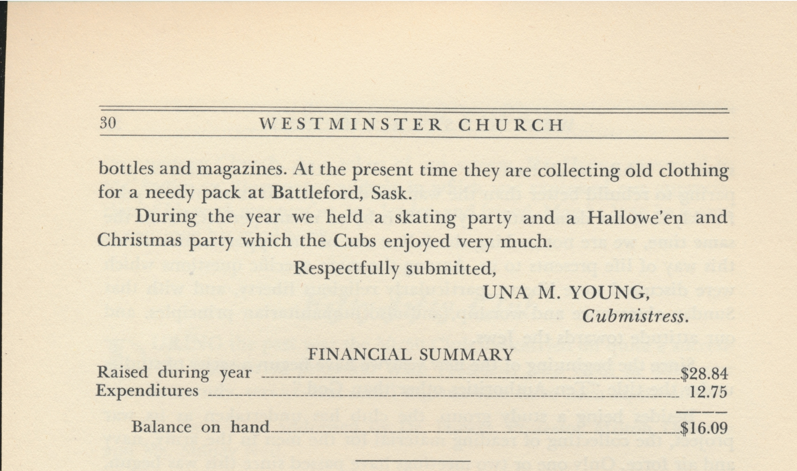
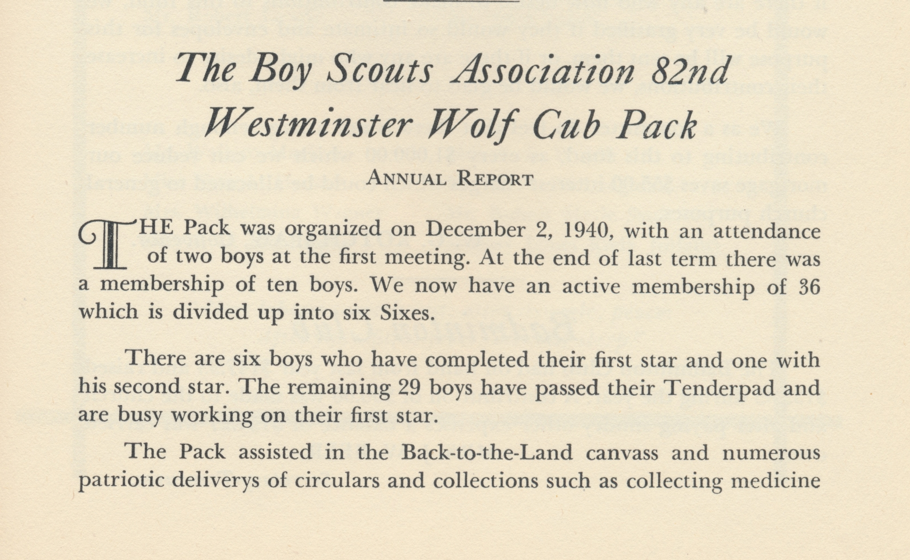

-1-MasterItem.svg)
Stories of Westminster United Church & its People / Page
234
For Young People
In the article earlier in this ebook on Sunday School we mentioned the
beginnings
of Lord Baden- Powells’ Scouting program for boys (designed as one writer puts it “to teach
young boys the skills of camping, teamwork, pioneering, leadership, and stalking”) and his sister,
Agnes’s Guides and Brownies programs for girls. The hand book for the girls’ program was called
“How Girls can help build up the Empire.” These in the first decade of the 20th Century.
These programs were (and are) secular in nature. The response of the main-line
Protestant churches
of the time in Canada (Presbyterian, Anglican and Baptist) was to create similar
activity programs
for young people but with a Protestant Christian focus in addition. Hence the
development
of CGIT (Canadian Girls in Training) and the boys parallel Tuxis Boys, both with
their roots
in the YMCA (Young Mens' Christian Association).
After WW 2 the Tuxis program gradually dwindled and ended. CGIT had a longer
life going well
into the last decades of the 20th Century. At Westminster Tuxis gave way to Cubs
and Scouts in 1940.
And CGIT lost out to Girl Guides and Brownies in the late 1960s early 1970s.
Table
of Contents


Many Things